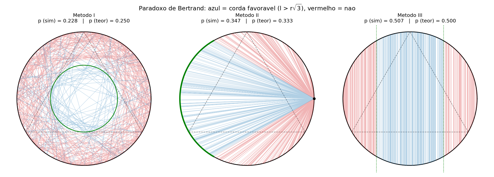
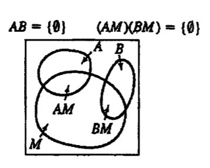
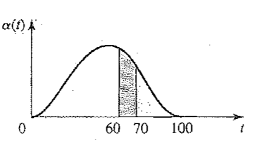
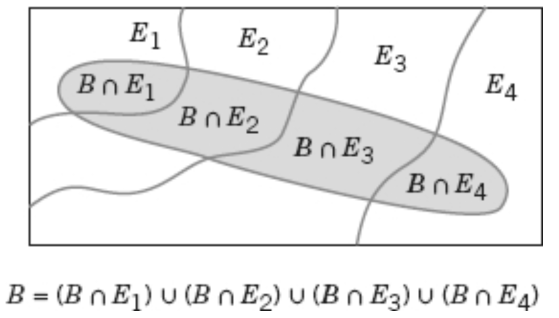

Como definir probabilidade sem cair em contradição
Duas tentativas, duas falhas, a saída axiomática de Kolmogorov — e o que se deduz a partir dela.
O que a teoria observa
Ponto de partida: uma regularidade empírica, não uma definiçãoThe theory of probability deals with averages of mass phenomena occurring sequentially and simultaneously, e.g. electron emission, system failure, turbulence, among many others. It has been observed that in these and other fields certain averages approach a constant value as the number of observation increases and this value remains the same (…). Papoulis & Pillai, Probability, Random Variables, and Stochastic Processes, 4ª ed.
Objetivo: compreender, quantificar e modelar o tipo de variações que encontramos com frequência.
Um experimento que pode fornecer diferentes resultados, embora seja repetido toda vez da mesma maneira, é chamado de experimento aleatório.
Espaço amostral
O conjunto de tudo que pode acontecerO conjunto de todos os resultados possíveis de um experimento aleatório é conhecido como espaço amostral do experimento, denotado por S.
Exemplo — câmera flash
Experimento que registra o tempo de recarga de um flash, limitado entre 1,5 e 5 segundos.
A melhor escolha de um espaço amostral depende dos objetivos do estudo.
Eventos
Subconjuntos de S — e a álgebra de conjuntos que vem juntoEvento é um subconjunto do espaço amostral de um experimento aleatório.
- A união de dois eventos é o evento que consiste em todos os resultados contidos em cada um dos dois eventos: E1 ∪ E2.
- A interseção é o evento que consiste em todos os resultados contidos nos dois eventos, simultaneamente: E1 ∩ E2.
- O complemento de um evento é o conjunto dos resultados no espaço amostral que não estão no evento: E′ ou Ec.
Situações especiais
- Como E ⊆ S, temos o evento certo E = S e o evento impossível E = Sc = ∅.
- Eventos excludentes: E1 ∩ E2 = ∅.
Tentativa 1 — frequência relativa
Definir probabilidade pelo que se medeA probabilidade P(E) de um evento E é o limite
em que ne é o número de ocorrências de E e n é o número de tentativas.
Essa abordagem pode ser usada apenas como hipótese, mas não como base de construção da teoria probabilística, por mais que sejam feitos muitos experimentos.
O paralelo com a resistência
Poderíamos tentar definir uma resistência R pelo limite
A teoria resultante é complexa demais — melhor usar uma abordagem axiomática, baseada nas leis de Kirchhoff.
Tentativa 2 — definição clássica
Definir probabilidade antes de qualquer experimentoA probabilidade P(E) de um evento E é determinada, a priori, sem experimentação, a partir da razão
em que N é o número de resultados possíveis (dispostos de maneira igualmente provável) e NE é o número de resultados favoráveis para o evento E.
O problema desta abordagem é a possibilidade de ambiguidade.
Toda vez que um espaço amostral consistir em N resultados possíveis que forem igualmente prováveis, a probabilidade de cada resultado é 1/N.
Para um espaço amostral discreto, a probabilidade de um evento E, denotada por P(E), é igual à soma das probabilidades dos resultados em E.
A partir de um silo com 50 itens, seis deles são selecionados aleatoriamente sem reposição. O silo contém três itens defeituosos e 47 não defeituosos. Qual é a probabilidade de que exatamente dois itens defeituosos sejam selecionados na amostra?
Como se trata de um espaço discreto, vamos recorrer a alguma técnica de contagem. Depois voltamos para ele.
Técnicas de contagem
Resolver o “dispostos de maneira igualmente provável”Considere que uma operação possa ser descrita como uma sequência de k etapas, em que ni é o número de maneiras de completar a etapa i ∈ [1, k]. Então:
Número de sequências ordenadas dos elementos de um conjunto. Seja n o número de elementos diferentes do conjunto:
Uma propriedade interessante do fatorial é a recursão.
Número de permutações de subconjuntos de r elementos selecionados de um conjunto de n elementos diferentes:
Número de permutações de n = n1 + n2 + ⋯ + nr objetos dos quais n1 são de um tipo, n2 de um segundo tipo, …, e nr do r-ésimo tipo:
Número de subconjuntos de tamanho r que podem ser selecionados a partir de um conjunto de n elementos:
Exercícios
Uma placa de circuito impresso tem oito localizações diferentes em que um componente pode ser colocado. Se quatro componentes diferentes forem colocados na placa, quantos projetos diferentes serão possíveis?
Componentes diferentes ⇒ a ordem importa.
P84 = 8 × 7 × 6 × 5 = 1.680 projetos.
Um componente pode ser colocado em oito localizações diferentes em uma placa de circuito impresso. Se cinco componentes idênticos forem colocados na placa, quantos projetos diferentes serão possíveis?
Componentes idênticos ⇒ só importa quais posições, não a ordem.
C85 = 8!/(5!·3!) = 56 projetos.
Silo com 50 itens: 3 defeituosos e 47 não defeituosos. Amostra de seis itens, sem reposição. (a) Quantas amostras contêm exatamente dois defeituosos? (b) Qual a probabilidade desse evento?
A amostra é um subconjunto: escolhemos 2 dentre os 3 defeituosos e 4 dentre os 47 não defeituosos.
NE = C32 × C474 = 3 × 178.365 = 535.095 amostras.
P(E) = 535.095 / C506 = 535.095 / 15.890.700 ≈ 0,0337
Paradoxo de Bertrand
E quando o número de resultados possíveis é infinito?We are given a circle C of radius r and we wish to determine the probability p that the length l of a “randomly selected” cord AB is greater than the length r√3 of the inscribed equilateral triangle. Papoulis & Pillai
Mostra um questionamento da unicidade da solução da formulação clássica para problemas em que a quantidade de resultados possíveis é infinita.
Três métodos, três respostas
| Método | Como a corda é sorteada | Favorável quando | p |
|---|---|---|---|
| I | Ponto médio uniforme no disco | ponto médio dentro do círculo de raio r/2 | 1/4 |
| II | Extremos uniformes na circunferência | extremo B no arco de 120° | 1/3 |
| III | Distância uniforme num diâmetro | |d| < r/2 | 1/2 |

As três construções, animadas
O problema é que “seleção ao acaso” precisa ser definida: cada um dos três métodos corresponde a uma forma diferente de sortear a corda — ou seja, a uma distribuição de probabilidade diferente. Não existe uma única resposta “correta”; a resposta depende do mecanismo que gera a corda.
Voltaremos a esse conceito de distribuição de probabilidade mais adiante, e ele vai ajudar a formalizar essa ideia.
Axiomas de probabilidade
Kolmogorov, 1933Probabilidade é um número que é atribuído a cada membro de uma coleção de eventos, a partir de um experimento aleatório, que satisfaça as seguintes propriedades:
-
A1
P(S) = 1em que S é o espaço amostral
-
A2
0 ≤ P(E) ≤ 1para qualquer evento E
-
A3
P(E1 ∪ E2) = P(E1) + P(E2)para dois eventos E1 e E2 com E1 ∩ E2 = ∅
Álgebra da probabilidade
O que se deduz a partir de A1–A3We roll two dice and we want to find the probability p that the sum of the numbers that show equals 7.
(a) We could consider as possible outcomes the 11 sums.
(b) We could count as possible outcomes all pairs of numbers not distinguishing between the first and the second die. Papoulis & Pillai
Os resultados em (a) e (b) não são igualmente prováveis.
1/11, 1/7 e 1/6 para o mesmo experimento — como 1/4, 1/3 e 1/2 em Bertrand. A diferença é que aqui S é finito e dá para decidir: só os 36 pares ordenados são igualmente prováveis. É exatamente por isso que a afirmação a seguir precisa da hipótese que ela carrega.
Toda vez que um espaço amostral consistir em N resultados possíveis que forem igualmente prováveis, a probabilidade de cada resultado é 1/N.
We must count all pairs of numbers distinguishing between the first and the second die. Papoulis & Pillai
Para um espaço amostral discreto, a probabilidade de um evento E, denotada por P(E), é igual à soma das probabilidades dos resultados em E.
Probabilidade de uma união
Para eventos mutuamente excludentes, E1 ∩ E2 = ∅ ⟹ P(E1 ∩ E2) = 0, e recaímos no axioma A3.
Como seria P(A ∪ B ∪ C)? E se os eventos forem mutuamente excludentes?
É o princípio da inclusão–exclusão: soma-se o que foi contado de menos e subtrai-se o que foi contado a mais, alternadamente.
Se forem mutuamente excludentes, todas as interseções são vazias e sobra P(A) + P(B) + P(C).
Uma partição U de um conjunto S é uma coleção de conjuntos mutuamente excludentes Ai de S tal que:
Nesse caso:
Probabilidade condicional
Reavaliar probabilidades diante de nova informaçãoA probabilidade condicional é um mecanismo de reavaliação de probabilidades, de acordo com a disponibilidade de novas informações.
É a probabilidade condicional de B dado A.
Mostre que probabilidades condicionais seguem os axiomas de probabilidade.

Exemplo — mortalidade

Denotamos por t a idade de uma pessoa ao falecer. A probabilidade t ≤ t0 é dada por
em que α(t) é uma função determinada pelos registros de mortalidade. Assumimos que
e 0 caso contrário. Qual é a probabilidade de que uma pessoa venha a morrer entre 60 e 70 anos, assumindo que ela estava viva aos 60?
É uma condicional: A = "viva aos 60" = {t > 60}, B = {60 < t ≤ 70}. Como B ⊂ A, temos A ∩ B = B.
Cerca de 49 %. Note que a probabilidade incondicional de morrer entre 60 e 70 é só 0,154 — a informação "estava viva aos 60" muda bastante a conta.
Interseção de eventos
A regra da multiplicação e a probabilidade totalPodemos reescrever a definição de probabilidade condicional para montar a regra da multiplicação:
A probabilidade de que o primeiro estágio de uma operação, numericamente controlada, de usinagem para pistões com alta rpm atenda às especificações é igual a 0,90. Falhas são causadas por variações no metal, alinhamento de acessórios, condição da lâmina de corte, vibração e condições ambientais. Dado que o primeiro estágio atende às especificações, a probabilidade de que o segundo estágio atenda às especificações é de 0,95. Qual é a probabilidade de ambos os estágios atenderem às especificações?
Sejam A = "1º estágio ok" e B = "2º estágio ok".
Interpretação prática: a probabilidade de cada estágio ser completado com sucesso precisa ser grande para que um pistão atenda a todas as especificações — os fatores se multiplicam, então erros pequenos em cada etapa se acumulam rápido.
Suponha que E1, E2, ⋯, Ek sejam k conjuntos participantes de uma partição U de S. Então:

P(A ∩ B) nunca passa de P(A). Reduza o primeiro estágio para 0,50 e a interseção cai junto, por mais perfeito que seja o segundo — é a interpretação prática do exemplo: os estágios multiplicam.
P(A ∪ B) anda para o outro lado. Basta um dos dois dar certo, então a união é sempre ≥ que cada parcela e cresce quando qualquer estágio melhora.
Igualando P(B|A) e P(B|Ac), a informação sobre o 1º estágio deixa de importar: os eventos ficam independentes e P(A∩B) = P(A)P(B) — o § 12.
A caixa 1 contém a bolas brancas e b pretas; a caixa 2 contém c brancas e d pretas. Uma bola de cor desconhecida é transferida da primeira caixa para a segunda, e então uma bola é retirada da segunda. Qual a probabilidade de ser branca?
Se nada fosse transferido, a resposta seria simplesmente c/(c+d). A transferência cria duas possibilidades mutuamente excludentes.
Sejam os eventos da bola transferida — que formam uma partição:
O evento de interesse é A = {bola branca é retirada da segunda caixa}, que só pode ocorrer sob uma das duas possibilidades. Pela regra da probabilidade total:
Mas — e aqui está o ponto — a caixa 2 agora tem uma bola a mais:
Caso especial — partição por A e Ac
É a forma que aparece no denominador do teorema de Bayes (§ 13) — normalmente é assim que se calcula P(B) na prática, quando só se conhecem as condicionais.
Independência
Quando a informação não muda nadaEm um caso especial, P(B|A) = P(B). Isso significa que o evento A não afeta a probabilidade de que o resultado de um experimento esteja no evento B.
Dois eventos são independentes se qualquer uma das seguintes afirmações for verdadeira:
- P(A|B) = P(A)
- P(B|A) = P(B)
- P(A ∩ B) = P(A)P(B)
No caso de múltiplos eventos, podemos usar a última condição:
Excludentes ≠ independentes. Se A ∩ B = ∅ e ambos têm probabilidade não nula, então saber que A ocorreu garante que B não ocorreu — ou seja, P(B|A) = 0 ≠ P(B). Eventos excludentes são, nesse sentido, o oposto de independentes.
Exemplo — os trens X e Y
Os trens X e Y chegam a uma estação ao acaso entre 8h00 e 8h20. O trem X para por 4 minutos e o trem Y para por 5 minutos. As chegadas são independentes.
- Especificar o experimento e a probabilidade geral P(A ∩ B).
- Qual a probabilidade de X chegar antes de Y?
- Qual a probabilidade de os trens se encontrarem na estação?
- Sabendo que se encontraram, qual a probabilidade de X ter chegado antes?
“Chegar ao acaso” é interpretado como: a probabilidade de um retângulo é a sua área dividida por 400. A independência das chegadas é o que autoriza P(A∩B) = P(A)P(B) — e é daí que sai a regra da área para qualquer região.
Os quatro itens, usando probabilidade = área ÷ 400:
(a) Com A = {t1 ≤ x ≤ t2} (faixa vertical) e B = {t3 ≤ y ≤ t4} (faixa horizontal), a independência dá
(b) C = {x ≤ y} é um triângulo de área 200 ⟹ P(C) = 200/400 = 0,5.
(c) Para se encontrarem, x < y+5 e y < x+4, isto é D = {−4 ≤ x − y ≤ 5}. São dois trapézios de base comum, área 159,5 ⟹ P(D) = 159,5/400 ≈ 0,399.
(d) CD é um trapézio de área 72, logo
Note que P(C) = 0,5 mas P(C|D) ≈ 0,451: saber que os trens se encontraram muda a chance de X ter chegado antes. Ou seja, C e D não são independentes.
Teorema de Bayes
Inverter o condicionamentoIniciamos com a comutatividade da interseção: P(A ∩ B) = P(B ∩ A). Aplicando a regra da multiplicação dos dois lados:
Thomas Bayes tratou essa questão nos anos 1700 e desenvolveu o resultado fundamental, conhecido como teorema de Bayes:
Na prática, P(B) no denominador quase sempre é calculado pela regra da probabilidade total.
Atividade — teorema de Bayes
Individual · entregar na próxima aulaUma fábrica monta placas em duas linhas. A linha 1 produz 60 % das placas e tem taxa de defeito de 2 %. A linha 2 produz os 40 % restantes e tem taxa de defeito de 5 %.
(a) Qual a probabilidade de uma placa escolhida ao acaso sair
defeituosa?
(b) Uma placa foi sorteada e está defeituosa. Qual a probabilidade
de ter vindo da linha 2?
Dica: o item (a) é a regra da probabilidade total (§ 11); o (b) é Bayes, usando o resultado de (a) no denominador.
(a) 0,032 · (b) 0,625
Repare: a linha 2 faz só 40 % das placas, mas responde por 62,5 % dos defeitos.
Um sistema de monitoramento verifica componentes. A falha que ele procura ocorre em 1 a cada 1000 componentes. O detector acusa 99 % das falhas reais, e dá alarme falso em 2 % dos componentes bons.
O detector acusou um componente. Qual a probabilidade de ele estar realmente com falha? Comente o resultado em duas ou três linhas.
≈ 0,047 — cerca de 4,7 %.
Um detector de 99 % de acerto, e ainda assim 19 em cada 20 alarmes são falsos. A razão é a raridade da falha: os 2 % de alarme falso incidem sobre um universo enorme de componentes bons. É por isso que Bayes importa.
Variáveis aleatórias
Do espaço amostral para os números reaisUma variável aleatória é uma função que confere um número real a cada resultado no espaço amostral de um experimento aleatório.
Uma variável aleatória é denotada por uma letra maiúscula, tal como X. Depois de um experimento ser conduzido, o valor medido da variável aleatória é denotado por uma letra minúscula, tal como x = 70 miliampères.
Uma variável aleatória discreta é uma variável aleatória com uma faixa finita (ou infinita contável). Uma variável aleatória contínua é uma variável aleatória com um intervalo (tanto finito como infinito) de números reais para sua faixa.
Contínuas
- corrente elétrica
- comprimento
- pressão
- temperatura
- tempo
- tensão
- peso
Discretas
- número de arranhões em uma superfície
- proporção de partes defeituosas entre 1000 testadas
- número de bits transmitidos que foram recebidos com erro
Distribuições de probabilidade — e aí o paradoxo de Bertrand (§ 07) finalmente ganha a linguagem para ser dito com precisão.